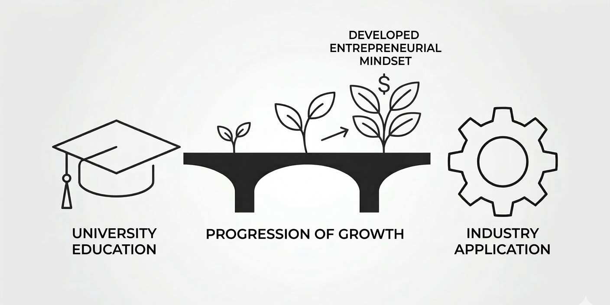
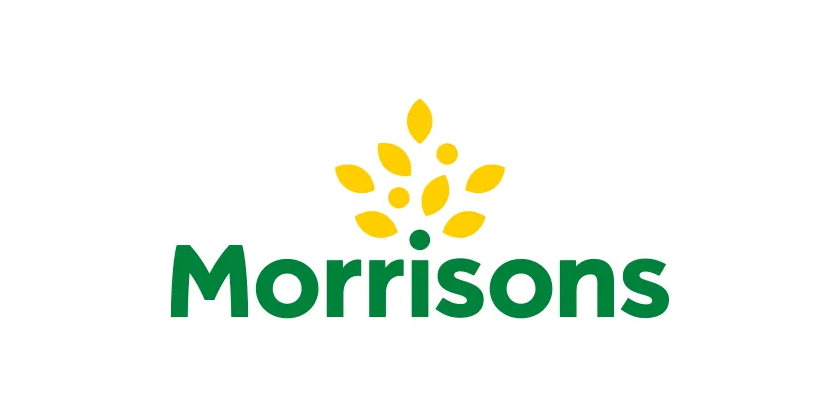
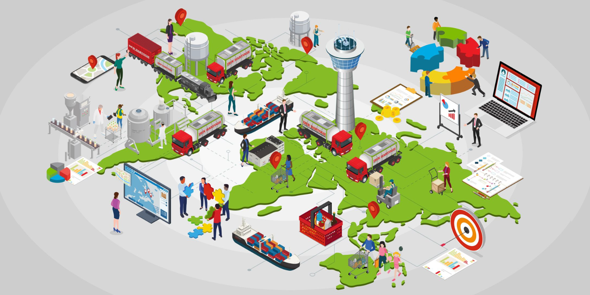
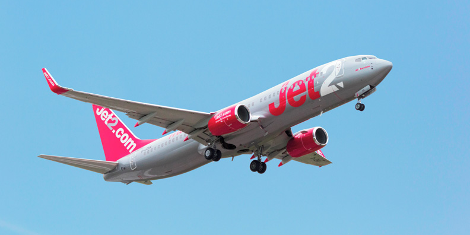
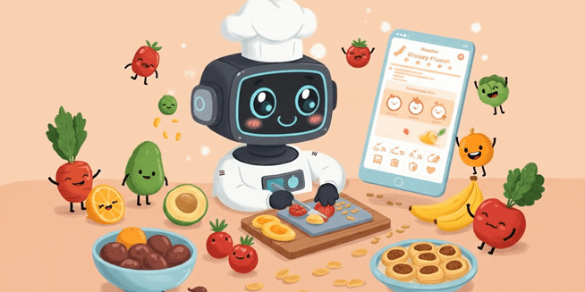
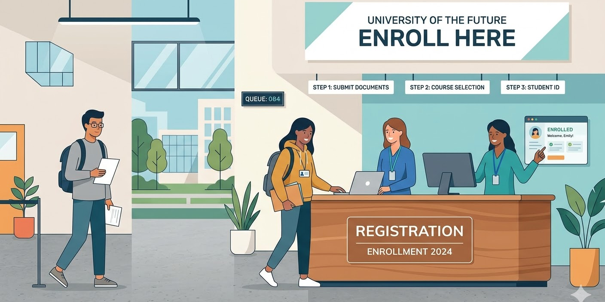
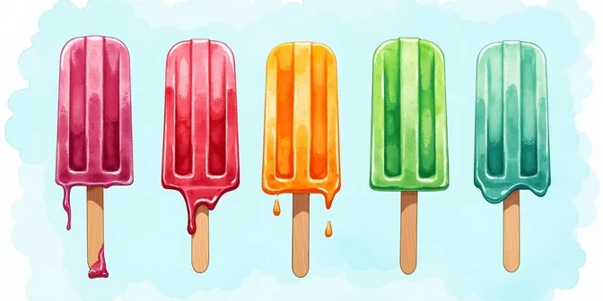
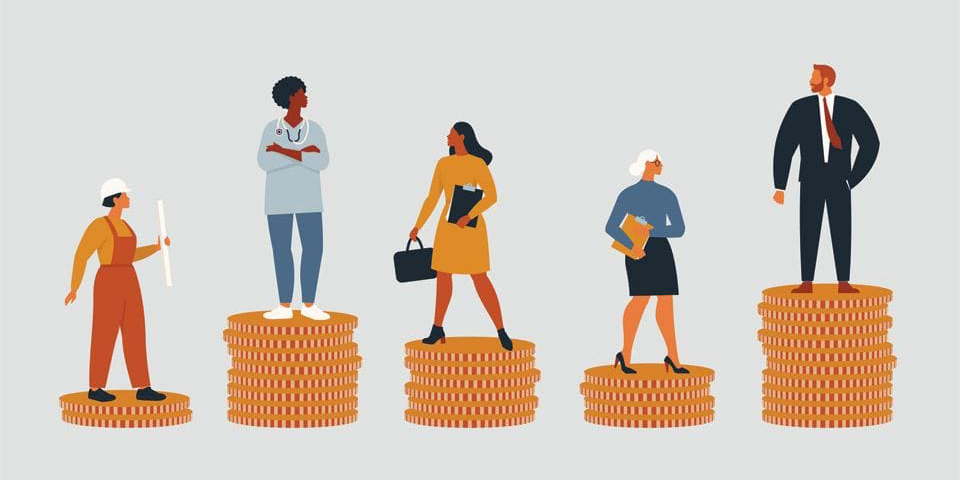

University-Industry Collaboration and Student Entrepreneurial Mindset
2025 – 2026

Leveraging Industry 4.0 Technologies for Sustainable Supply Chains at Morrisons
2025 – 2026

Enterprise Risk Assessment: Royal Den Hartogh Logistics Ltd.
2025 – 2026
Corporate Strategy: Volkswagen Group's Portfolio
2025

SOSTAC Marketing Strategy for Jet2 PLC
2025
Membership Retention Analysis Using a Multi-Class Churn Prediction Model
2023 – 2024
Stochastic Linear Programming for Membership Retention Optimization
2024
Bitcoin Closing Price Forecasting Using LSTM Neural Networks
2024

NutriGuide: AI-Powered Chatbot for Meal Recommendations
2024
Medicare Fraud Detection through Big Data and Machine Learning Models
2024

Student Enrollment Dynamics in the Business Analytics Department
2024
Predicting Employee Attrition Using Logistic Regression
2023
Neuron Entrainment: Relationship of Network Neurons and Pulsed Neurons
2023
Predicting Freshman Retention Using Classification Models
2023

Factorial Experiment: Effects of Airflow and Temperature on Melting Time
2023
Data Analysis and Recommendations on Netflix Content
2022

How Do Other Factors Influence the Gender Wage Gap by Occupation?
2022
A Cross-Year Statistical Analysis of Consumer Expenditure Patterns
2022